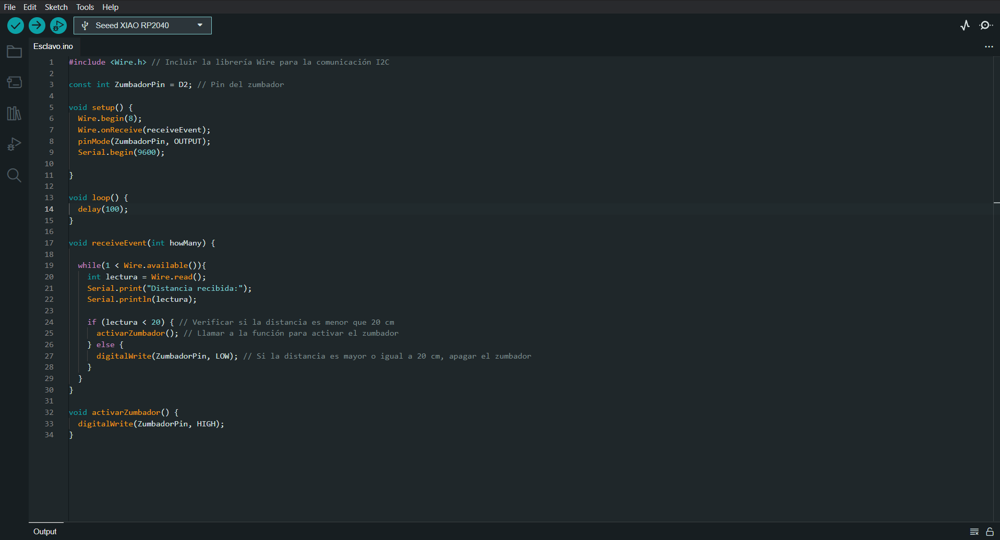
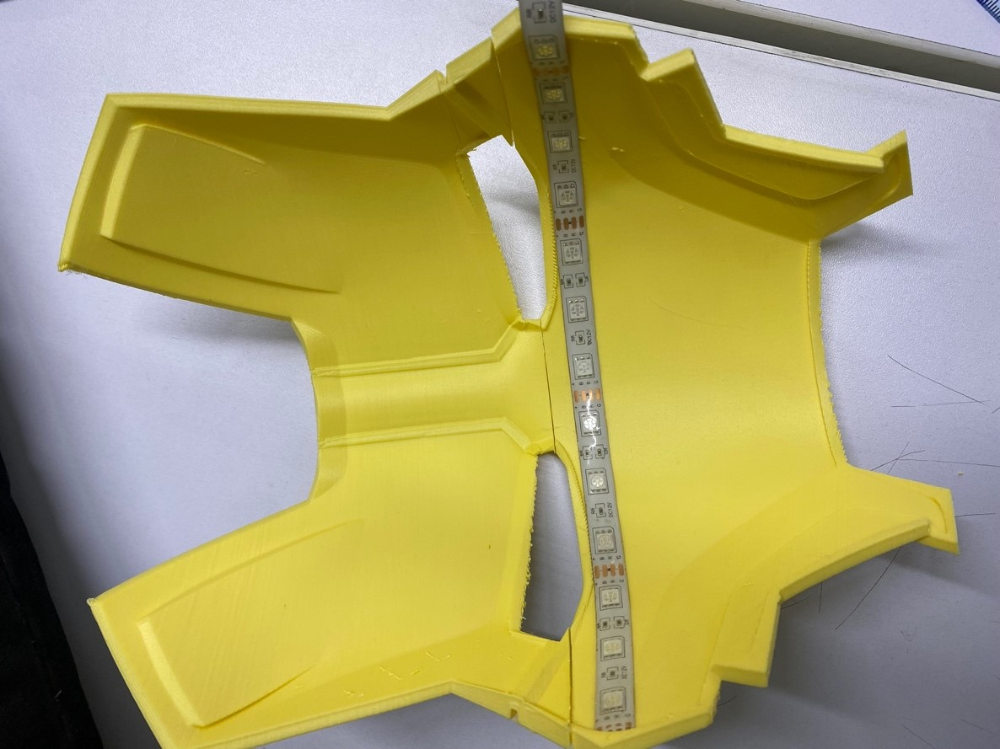

Welcome to Week 13
Embedded Networking and Communications
Hey! now we will learn about Embedded Networking and Communications, for this week we have the following group and individual assignments:
- Group assignment:
- Individual assignment:
o Send a message between two projects/p>
o Document your work to the group work page and reflect on your individual page what you learned
o Design, build and connect wired or wireless node(s) with network or bus addresses and a local interface.
GROUP ASSIGNMENT
For the group assignment we will begin by sending information from one Seed Xiao rp2040 shield to another, for this we will use our inserts developed in week 4.
We will use an ultrasound sensor, as well as a type of I2C communication, which will send information to the second shield and a small buzzer that will execute the function of emitting a sound every time the minimum programmed distance is exceeded.
Let's know a little about I2C communication….
The I2C protocol, or Inter-Integrated Circuit, is a serial communication protocol used to connect multiple devices to a microcontroller.
The operation of I2C is based on Primary-Secondary (master-slave) communication. The microcontroller acts as a master, controlling data flow to attached secondary (slave) devices. Each secondary (slave) device has a unique address assigned, allowing the primary (master) to select which device it wishes to communicate with.
When I2C communication is initiated, the primary (master) sends a start signal, followed by the address of the secondary (slave) device it wishes to query. Then the data is transmitted, usually in bytes, between the primary (master) and the secondary (slave). The primary (master) generates clock signals to synchronize the transmission.
In the shields that we will use this I2C connection we place them at the bottom, for the Primary plate, the bus address is not mandatory.
Well let's start the master's programming
I will leave the code in .ino at the end of this assignment, having the master ready let's go about programming the slave
Great, we now have both codes, within this interaction and sending of messages we will manage a simple logic, the ultrasound will give us the readings and if it is less than 20cm it will give the order to emit a beep on the buzzer
Here we can see how both shields are connected through I2C and each one with its elements already described above.
We upload the programming to both shields and observe how the readings occur whether sent or received.
Here I will leave you a small video about how this exercise works….
There are various methods of connection and interaction between shields, one of the most economical because you only have to have cables is the I2C, we also have a connection by Bluetooth and by network, I will leave you with all the necessary files so that you can also experiment with this type of communication and generate communication networks between slaves and master
Well now let's start with the individual assignment, I'm sure we will come up with something great
INDIVIDUAL ASSIGNMENT
For my individual order, I plan to make a lamp that can be controlled through a Wi-Fi network. For this, I will use an already designed STL and make modifications to it to be able to place my control and power supply system. Here is the reference link
Let's pass the pieces to the priest so we can start printing
And.... let's start with the impression!
Well now I will make a simple design of a box to have the control system and the power supply there, We will use a simple to use web program in which you enter the measurements and it automatically generates the plans of the box.0
Here I leave you the link so you can experiment, now we will make some fittings for the switches and let's cut!
We now have the cuts ready, we will assemble the control box
Having the impressions, we proceed to assemble and place the LED strip
Well now let's make the connections with our control box
Let's start with the programming, we will use the Arduino IDE to establish a connection with the Esp32
We create the website, in HTML to generate the local interface through a wireless connection
In order to upload it to the esp32 we will have to compress the website for which we will use a compression program, I leave it here
As you can see, an optimization of 18% was achieved, Well now we load the esp32..
When loading it, it gives us the IP of the server: 192.168.164.214 , We enter the IP from the mobile and confirm the correct display of the interface.
Well, now let's program the LED to turn on according to the interface and let's start the tests.
Here in data.h we configure the network to which we want it to connect and place the compressed website so that it starts every time the esp32 is turned on
In the general sketch we declare the variables, we also configure the program's response to each signal that the page sends us, such as on, off and changing colors.
Well, we have everything ready, here is a video of how it works…….
It turned out great, I leave all the files of this adventure here so you can replicate it.
See you next Week.